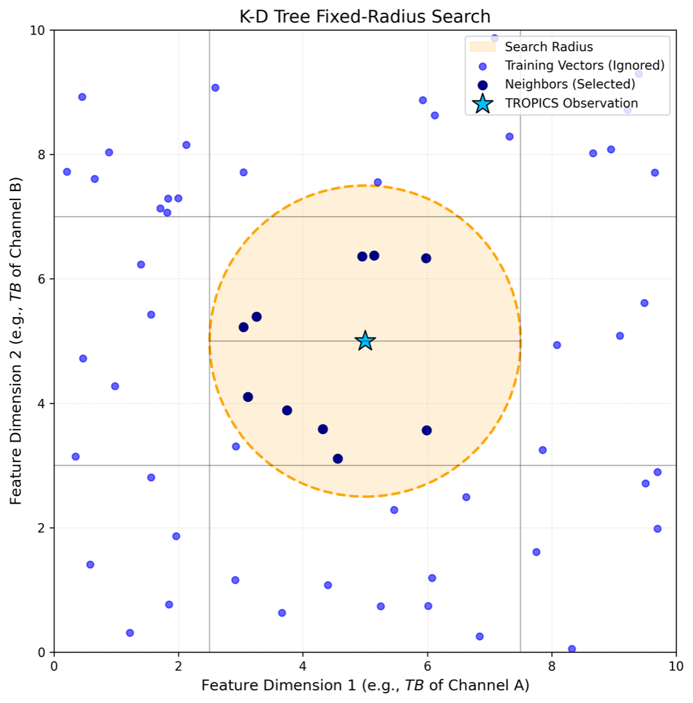
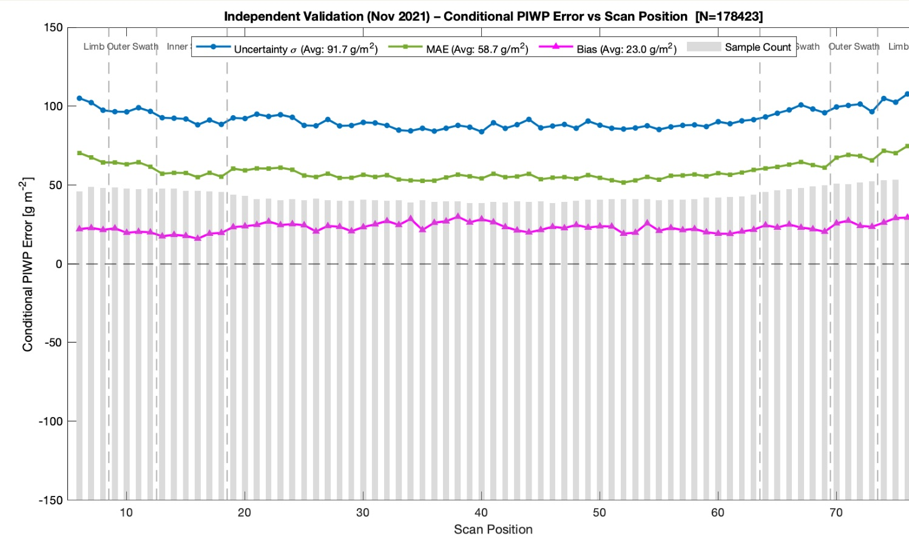
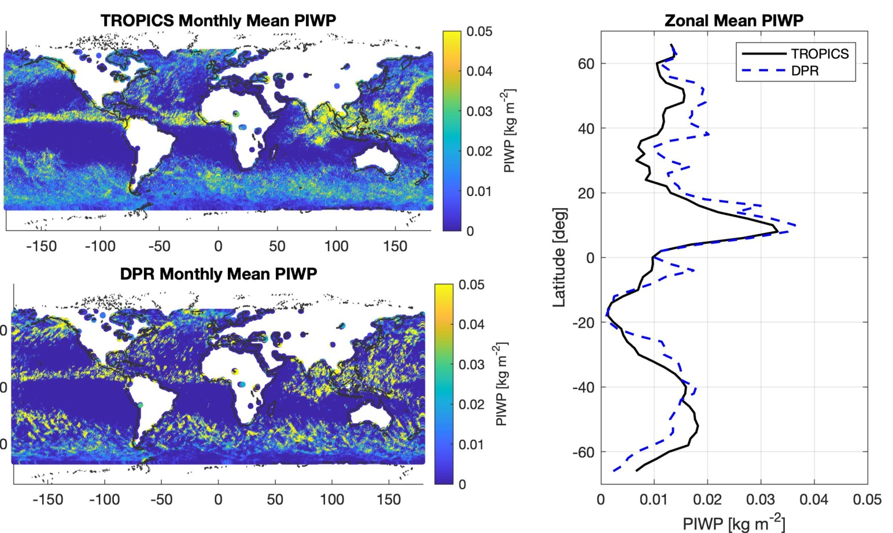

NASA's TROPICS mission flies a constellation of CubeSats that revisit tropical cyclones far more often than traditional satellites. Its new 205 GHz channel is sensitive to precipitation-sized ice, which is a key signal of storm structure and convective intensity. I own the retrieval that turns those observations into a precipitation ice water path (PIWP) product, end to end: algorithm, validation, production code, documentation and delivery.
Approach

- Instance-based, not extrapolating. A k-d tree searches a database of collocated TROPICS observations and GPM Dual-frequency Precipitation Radar estimates. Each new observation is answered by its neighbours within a fixed radius in feature space, so the retrieval stays inside what it has seen rather than extrapolating the way a neural network can.
- Physics-informed features. Inputs are brightness-temperature depressions relative to clear-sky radiative-transfer simulations, which separate the ice-scattering signal from surface and atmospheric variability. The database is stratified by relative airmass to handle the cross-track viewing geometry.
- Uncertainty from the neighbourhood. The spread of neighbouring reference values gives every pixel its own, heteroscedastic uncertainty, documented for users as algorithm spread rather than total error.
Validation against independent radar data

On independent November 2021 data (178,423 profiles), pixel-level mean absolute error is about 59 g m⁻², and both error and uncertainty stay stable across the full scan swath. Monthly global means for September 2021 match the radar's zonal structure with r = 0.87.

Shipping it
The retrieval package was delivered to NASA for operational processing in 2025, and the product is distributed through NASA's GES DISC. Later versions added a quality-control flag and geolocation fields requested by users. Along the way I found brightness-temperature calibration drift in the upstream Level-1 data, built bias corrections from clear-sky simulations, and confirmed them with the mission calibration team.
Methods and figures are from my IGARSS 2026 paper with R. Bennartz, R. V. Leslie and W. J. Blackwell (Vanderbilt and MIT Lincoln Laboratory). Supported by NASA and MIT Lincoln Laboratory.